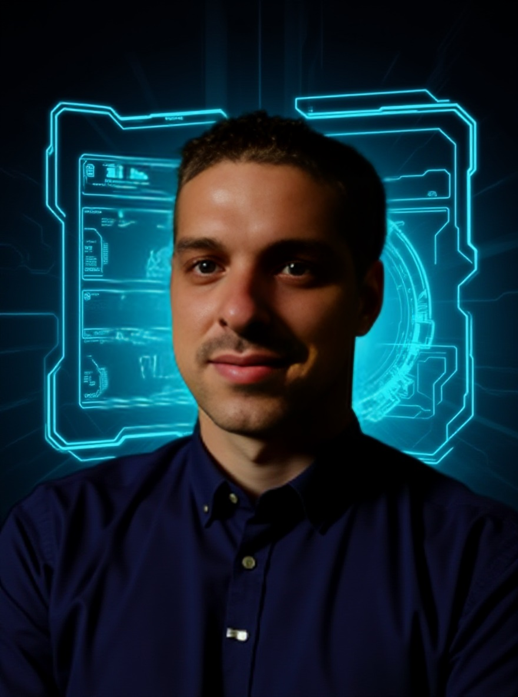

Stefan Zeilberger
Stefan Zeilberger
Software-Testautomatisierung | Industrieller Lösungsarchitekt

„Technologie als Werkzeug, nicht als Selbstzweck. Wahre Exzellenz entsteht dort, wo operative Planung, wirtschaftlicher Weitblick und Anwenderfokus verschmelzen.“
Fehlerbeseitigung an der Wurzel statt Symptombekämpfung – im Code wie an der Hardware.
95% Zeitersparnis durch intelligente Automation und Echtzeit-Integration.
Skalierbare Gesamtlösungen zur Reduktion manueller Aufwände und Erhöhung der Transparenz.
Technologie-Bestand
Spezialprojekte
Live Playwright Browser
Automation | Node.js
Eliminierung von 30s-Login-Zyklen durch permanente Sitzungen. Debugging an exakter Fehlerstelle.
Automatisierter Test-Generator
CLI | TUI | High-Privacy Mode
Vollautomatische Erstellung komplexer Test-Strukturen. 90% Zeitersparnis durch standardisierte Code-Injektion.
Automatisierter Bewerbungs-Generator Ai powered
REST | NLP | Prompt Engineering
NLP-gestütztes Framework zur automatisierten Akquise: Algorithmisches Matching von Anforderungsprofilen via REST-Schnittstelle und Prompt-Engineering mit dynamischer Frontend-Hydration durch URL-basierte JSON-Injektion.
VR Atomic Builder
VR | Edutech
Haptisches Lernen auf atomarer Ebene: Montage chemischer Formeln.
Industrie-Vision-Hack
ML | Python
Präzisions-Offset-Berechnung via 50€-Hardware und Canny-Filter.
Professionelle Leistungsbilanz
CGM Clinical Österreich GmbH
Test Automation Engineer
- Strategische Portierung und Refaktorierung der Authentifizierungs-Logik.
- Entwicklung des Test-Generators (90% Zeitersparnis).
- Automatisierung des Reportings und nahtlose Integration in das Aufgabenmanagement.
- High-Level Erweiterung des Playwright-Frameworks.
CALPANA business consulting GmbH
Software Test Engineer
- Sicherung der Softwarequalität durch hybride Testverfahren (Manuell & Automatisiert).
- Durchführung kritischer Regressionstests zur Absicherung von Business-Logiken.
GNT Systems
Software Developer C#
- Weiterentwicklung von Dashboard-Systemen und Debugging komplexer C#-Architekturen.
- On-Site Deployment und Installation proprietärer Softwarelösungen.
Flowery Field
Prozessoptimierer
- Radikale Optimierung interner Produktions- und Lagerlogistikprozesse.
- Standortevaluierung Linz und strategische Erweiterung der Produktpalette.
Gasser GmbH
Forschung & Entwicklung Mitarbeiter
- Pionierarbeit in AR-gestützter Prozesssicherung und Machine Learning (Neuronale Netze).
- Programmierung autonomer Lagerlogistik und KI-basierter Ladungsträger-Erkennung.
Virtual Reality Linz
Selbstständig / Founder
- B2B-Innovationen: Spatial Mapping für den Immobilienmarkt und Virtual Reality Edutech.
- Netzwerkaufbau und operatives Business-Management.
Automotive Components Linz
Anlagen Betreuer / Stellvertretender Schichtleiter
- Führung und Schulung von Teams in der Hochleistungsproduktion.
- Roboter-Programmierung (ABB) und Prototyping auf nicht linearen Schweißanlagen.
- Audit-Ansprechpartner und operative Feinplanung bei Abweichungen.
Huber GmbH
Metallfacharbeiter / Monteur
- Koordination komplexer Montagen und Bauabnahmen vor Ort.
Qualifikations-Profil
IT-Fachspezialist / Software Engineering
Vertiefung in objektorientierter Programmierung, Systemarchitektur und Qualitätssicherung.
📄 Zeugnis einsehenMetallfacharbeiter / Maschinenbau
Fundamentale Ausbildung in Werkstoffkunde, Konstruktion und industriellen Fertigungsprozessen.
📄 Dokument öffnenDas Fundament
Radikale Integrität
Absolute Offenheit – auch wenn es unbequem ist. Die einzige Säule für echtes Vertrauen.
„Verlässlichkeit ist die Konsequenz aus Rückgrat.“
Der Core-Kernel
Verheiratet mit Valentina.
Vater von Tanja, Amy & Jasmin.